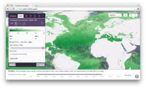

A web-based GIS tool for visualisation and analysis of geospatial data
View the Project on GitHub pmlrsg/GISportal

The Ocean Colour CCI web GIS portal allows users to view, manipulate and analyse all products from ESA's Ocean Colour Climate Change Initiative .
This tool has been developed to facilitate access to an evidence base of available literature on the impacts of offshore renewable energy developments (fixed-base wind, floating wind, wave and tidal) and the outcomes for marine ecosystem services. The evidence was collated through a semi-systematic review of global primary scientific literature and UK grey literature, regarding the impacts of OWF developments.
DANUBE4all aims to restore freshwater ecosystems in the Danube River Basin through the development of a comprehensive, scientifically-based and practically-orientated Restoration Action Plan (DBRAP). The project seeks to address the lack of knowledge, awareness, and participation of local people and business actors in the implementation of freshwater ecosystem restoration.
The Lakes Climate Change Initiative allows users to view, manipulate and analyse all products from ESA's Lakes CCI Project .